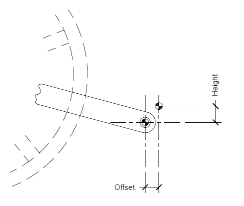

These are the measurements for the pedals. The pedals are the contact points of the rider's feet.
This is height of the pedal from the center of the spindle to the bottom of the foot. This distance should take into account the depth of the pedal, the cleats (if used), and the sole of the shoe.
This is lateral offset of the pedal. The contact points can be shifted forward or backward.